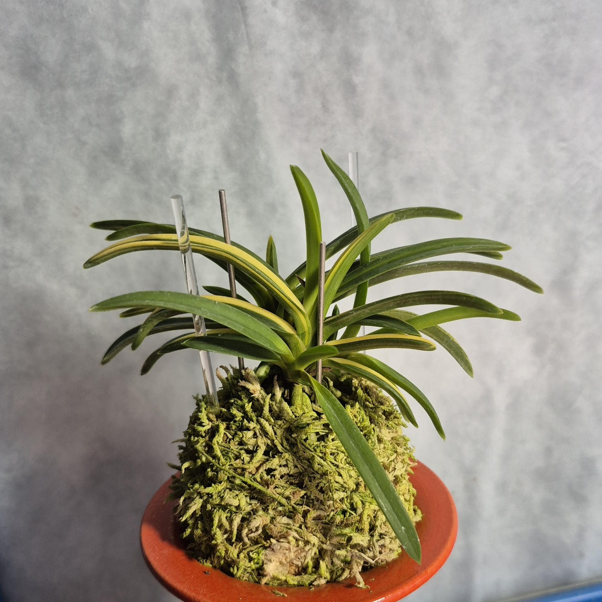
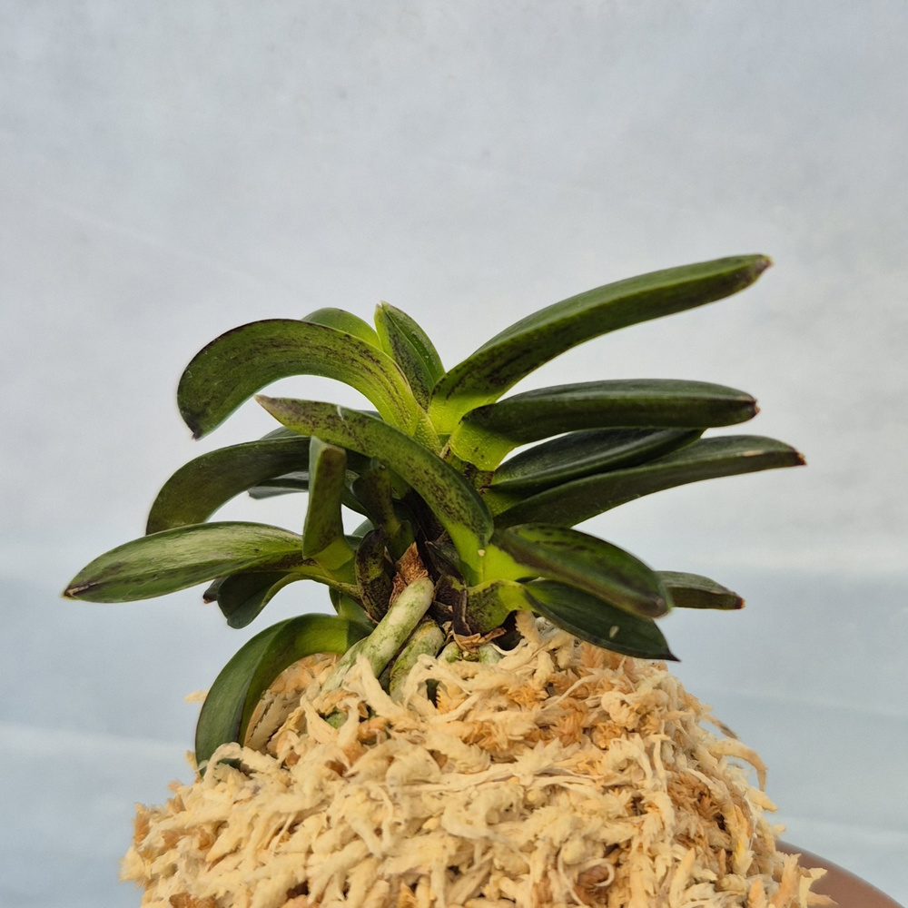
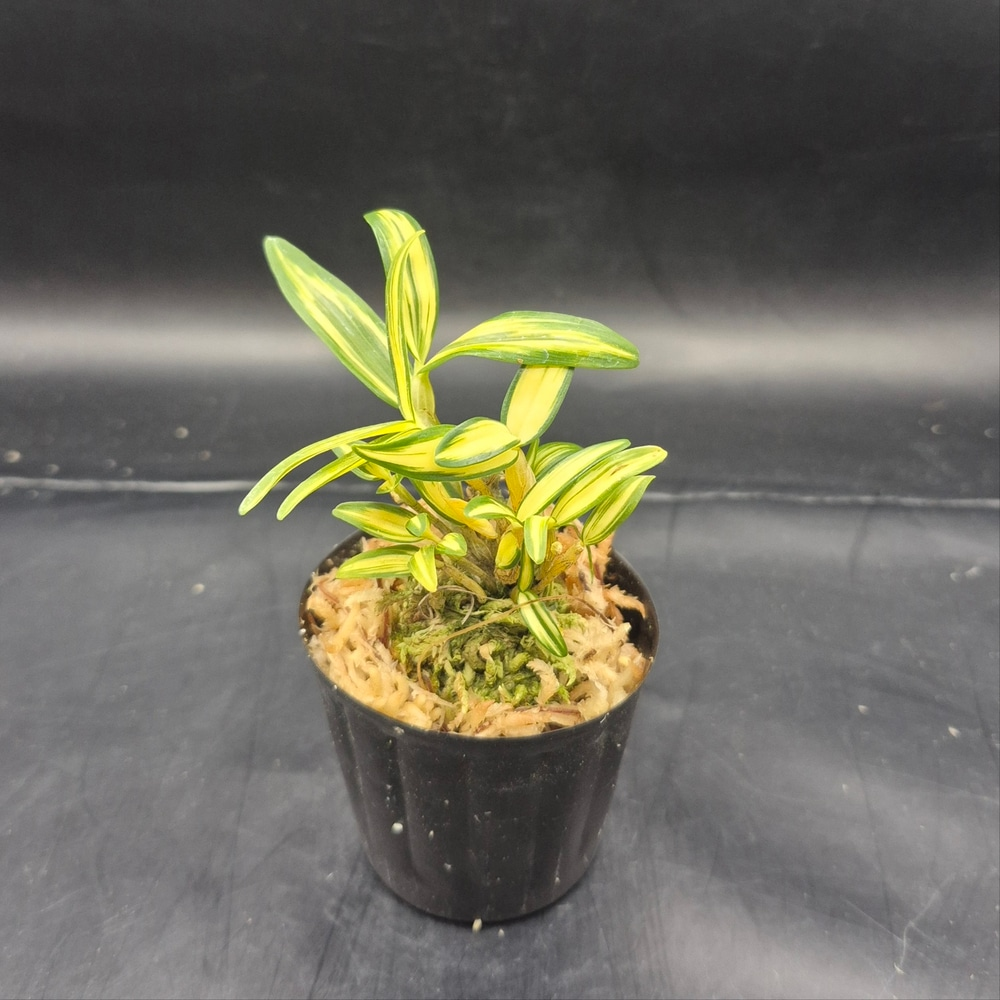

CSFART ORCHID COLLECTION
숯돌꽃 난농원
실제 판매 개체 사진과 상세 설명으로 만나는 풍란 도감
품종 둘러보기

무지동환 0001 · 취선 1023 · 요산 1024 · 상품 3개

호·중반백결 · 금두 6121 · 보금 3811 · 금광금 1521 · 금직 4501 · 음풍 0001 · 직희 1001 · 백록 1023 · 대장금 1023 · 취월호 1209 · 무쌍금 1024 · 상품 11건

복륜옥금 · 서시 · 동출도 0001 · 부귀전 1022 · 태백령 1023 · 백옥루 1024 · 상품 6개

특예흑악묵 1025 · 상품 1건

호반황귀전 0001 · 금루각 0002 · 천재호반 1023 · 금유황 0001 · 상품 4건

화물홍야 0001 · 홍풍 0001 · 홍백설 0001 · 상품 3건
등록할 실물사진 준비 중
입문·기타란등록 상품 준비 중

석곡융단 0001 · 상품 1건
등록할 실물사진 준비 중
자재등록 상품 준비 중
등록 상품: 융단 0001 · 금루각 0002 · 동출도 0001 · 음풍 0001 · 금직 4501 · 백결 단엽 0001 · 옥금(玉錦) 풍란 · 서시 1001 풍란 · 금두(金兜) 6121 황호 풍란 · 보금(寶錦) 3811 백황호 풍란 · 동환(童丸) 0001 무지 두엽 · 홍야(紅夜) 0001 색화 · 부귀전 1022 · 직희 1001 · 홍백설 0001 · 취선 1023 · 백록 1023 · 대장금 1023 · 천재호반 1023 · 태백령 1023 · 요산 1024 · 취월호 1209 · 무쌍금 1024 · 백옥루 1024 · 흑악묵 1025 · 금유황 0001